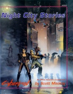

|  | Technical data |
| Scenario for the role-playing game Cyberpunk 2020, published by Atlas Games (1992) | |
| Theme | A series of small scenarios taking place in Night City, which can be combined in a campaign |
| Background quality | 2 / 5 |
| Scenario quality | 2 / 5 |
| Rules quality | - |
| Artworks quality | 2 / 5 |
| Writing quality | 2 / 5 |
The scenarios presented in this collection (respectively "The Slow Boat from Chiba", "Sweet Revenge part one", "Deadline" and "Sweet Revenge part two") are very classic scenarios, for Cyberpunk. There are even passages to be read aloud by the GM (argh !). A fixer hires the PCs to do a job that is of course not very legal, and will inevitably go wrong. Some ideas are exploitable but not as they are. This requires some work on the NPCs and the decor, because the bare minimum is provided : doors, monsters and treasures uh... I meant airlocks, punks and credit cards. One last detail : the illustrations are awful, the score of 2 is only justified by the cover.
{kind=link}